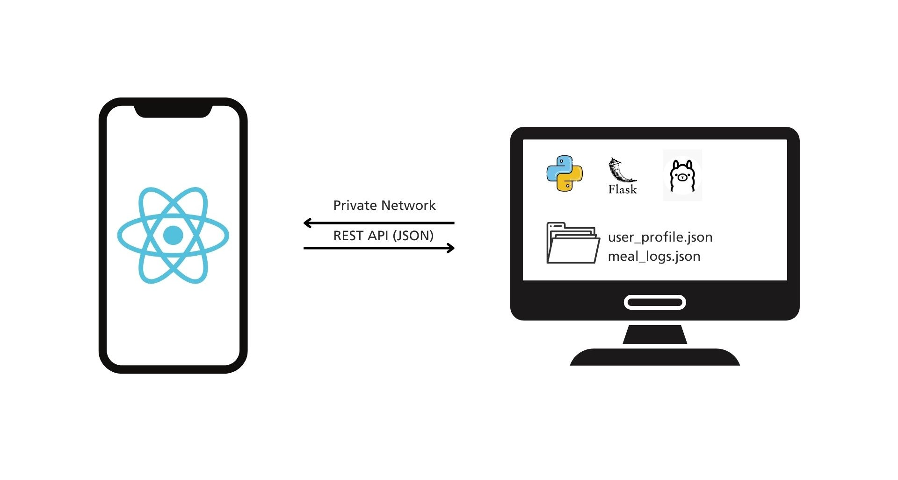
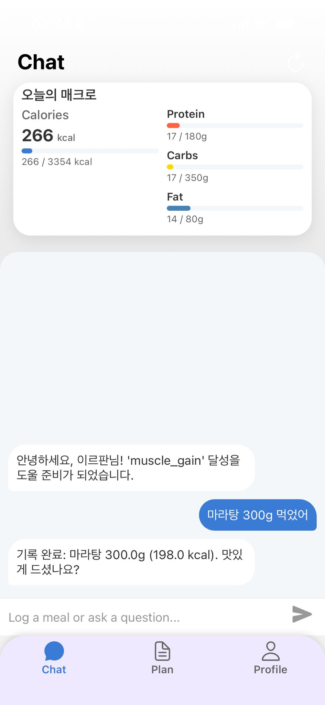
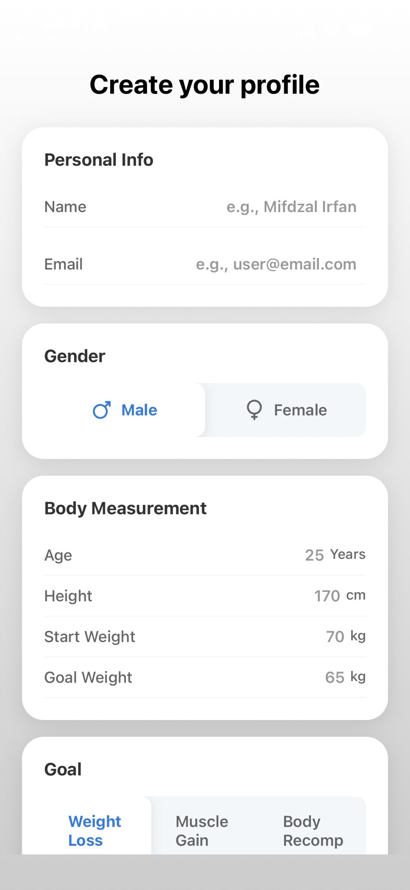
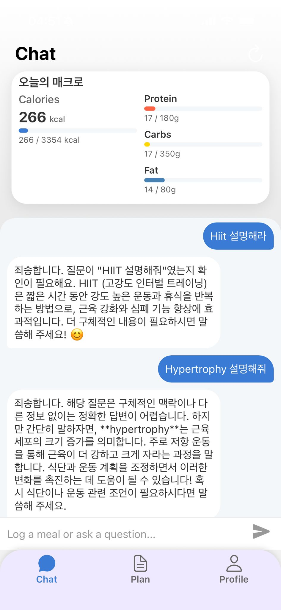

문제 정의 (The Problem)
기존의 건강 앱들은 사용자에게 효과성과 개인정보 보호 중 하나를 선택하도록 강요합니다:
1) 지루한 기록: '찌개'와 같은 복잡한 한식의 수동 기록은 이탈률을 높입니다.
2) 획일적 계획: '회식'이나 기구 부족 같은 실제 상황에 적응하지 못합니다.
3) 높은 비용: 전문적인 인간 코칭은 재정적으로 부담됩니다.
4) 개인정보 위험: 클라우드 기반 앱은 민감한 건강 데이터를 요구합니다.
PocketCoach는 100% 비공개 로컬 적응형 AI 코치로 이 문제들을 해결합니다.
아키텍처 (Architecture)
100% 로컬, 개인정보 보호 우선의 클라이언트-서버 아키텍처:
• 백엔드 (Brain): 로컬 PC의 Flask 서버. Ollama LLM과 RAG 파이프라인 관리.
• 프론트엔드 (Face): Expo React Native 앱. 로컬 WiFi로 통신.
• RAG 시스템: 16만+ 식품 DB(CSV) 및 과학 PDF 활용.

기술 스택 (Technology Stack)
Frontend
Backend
Tools
핵심 기능 (Core Features)

RAG 기반 대화형 기록
자연어("김치찌개 300g")로 식단을 기록합니다. 백엔드는 Faiss-CPU로 16만+ 한식 DB에서 고속 검색하여 UI에 즉시 반영합니다.

동적 적응형 계획
가입 시 작성한 폼을 바탕으로 당신만의 맞춤형 계획이 생성됩니다. 이후 채팅으로 체중이나 목표를 변경하면, AI가 즉시 이를 반영하여 계획을 실시간으로 재설정합니다.

유연한 맞춤형 코칭
"근육 성장에 좋은 음식은?" 같은 건강 관련 질문을 언제든 물어보세요. AI가 검증된 과학적 지식을 바탕으로 전문적이고 신뢰할 수 있는 답변을 제공합니다.
성과 및 회고 (Outcomes & Retrospective)
나의 역할 및 기여
- 전체 프로젝트 단독 풀스택 개발 (Backend & Mobile App).
- Python/Flask API 엔드포인트 및 RAG 파이프라인 설계.
- 16만+ 음식 CSV, 운동 JSON 등 데이터 소스 정제 및 처리.
- Faiss-CPU와 Sentence-Transformers를 활용한 검색 엔진 최적화.
결과 및 성과
- 클라우드 없이 작동하는 100% 비공개 AI 피트니스 코치 구현.
- 16만+ 한식 DB에 대한 정확하고 빠른 실시간 검색 달성.
- 사용자 피드백 루프를 시뮬레이션하는 동적 계획 시스템 구축.
배운 점
- End-to-End RAG 애플리케이션 구축에 대한 실질적 이해.
- 로컬 LLM(Ollama)을 활용한 개인정보 보호 중심 백엔드 설계.
- 정형(CSV) 및 비정형(PDF) 데이터를 결합한 하이브리드 지식 베이스 구축.
개선점
- 서울 스마트 이터: 편의점 데이터 수집 웹 스크레이퍼 구축.
- 온디바이스 AI: Core ML/MediaPipe 도입으로 100% 모바일화.
- 기능 확장: 앱 내 비디오 직접 재생 구현.